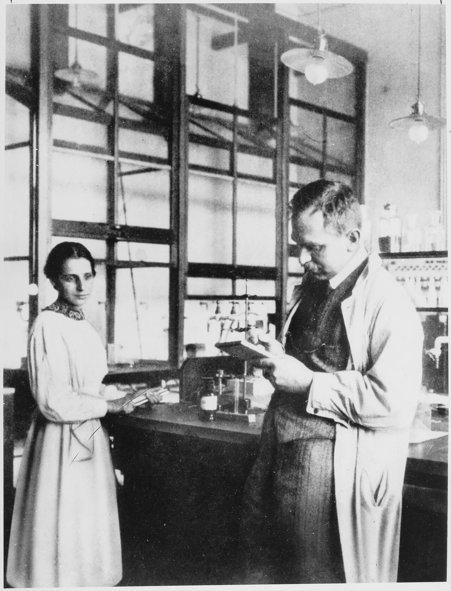
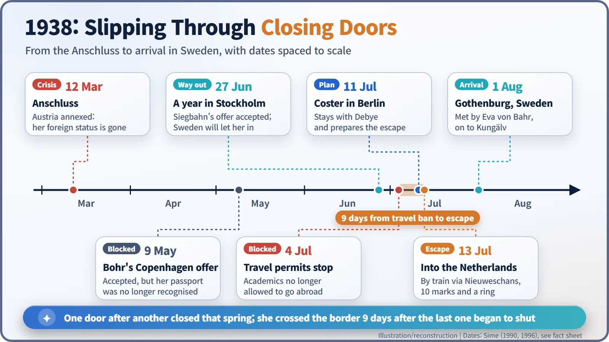
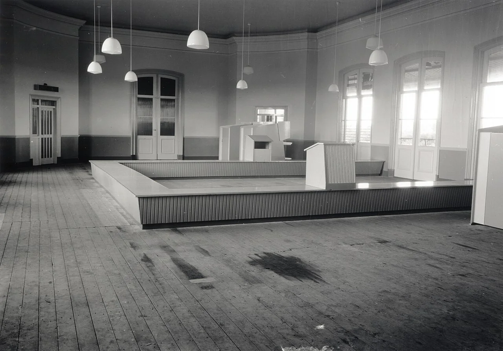
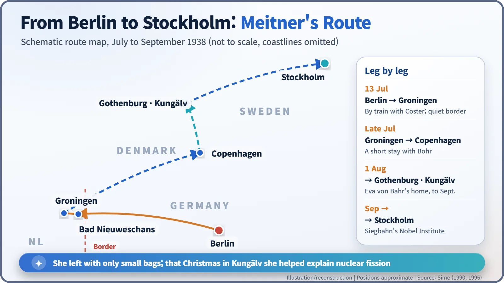

Nuclear History · 060
A Diamond Ring and Ten Marks — Lise Meitner Escapes Nazi Germany (1938)
As the last exit from Nazi Germany closed, a Dutch physicist escorted her across the border, carrying little more than ten marks and a ring Otto Hahn had inherited from his mother.
On 13 July 1938, the physicist Lise Meitner slipped out of Nazi Germany by train with a Dutch colleague, Dirk Coster, carrying small bags, 10 marks and a diamond ring Otto Hahn had inherited from his mother. Five months later, as a refugee in Sweden, she helped explain nuclear fission.
A suitcase, ten marks and a ring
On the morning of 13 July 1938, a 59-year-old woman stood at a Berlin railway station with a small suitcase. Inside were a few summer clothes. Her purse held 10 marks. And she carried one more thing: a diamond ring, pressed into her hand the night before by the colleague she had worked with for more than thirty years. The traveller was the physicist Lise Meitner (1878–1968). A few months later, as a refugee in Sweden, she would help explain a new phenomenon: nuclear fission. [1] [4]

Five years on a foreign passport
Meitner was born in Vienna into a family of Jewish descent. She came to Berlin in 1907, teamed up with the chemist Otto Hahn (1879–1968), and went on to lead the physics section of the Kaiser Wilhelm Institute for Chemistry. Hahn did the chemistry, Meitner the physics, and together they became one of the leading teams in radioactivity research.
When the Nazis took power in 1933 and began driving Jewish civil servants out of their jobs, Meitner was able to stay. She was an Austrian citizen, a foreigner, and her institute was not a state university. That thin shield held for five years. [3]
Doors closing, one by one
On 12 March 1938 German troops marched into Austria. With the Anschluss, the annexation of Austria, Meitner stopped being a foreigner overnight. Germany's anti-Jewish laws now applied to her in full, and her Austrian passport was no longer valid.
Niels Bohr offered her a position in Copenhagen, and she accepted on 9 May, but Denmark would not accept her passport. On 27 June, Manne Siegbahn in Stockholm offered her a one-year place, and Sweden was willing to let her in on the old passport. Siegbahn's new laboratory was devoted to nuclear physics, so on paper it was a good fit. Then, on 4 July, came worse news: academics would no longer be given permission to travel abroad. The last exit was about to close. [1] [6]

An escort from the Netherlands
Help came from across the border. Dirk Coster (1889–1950), a physicist at the University of Groningen, and his colleague Adriaan Fokker petitioned the Dutch government to let her in. Leiden arranged an unpaid lectureship for her, and Coster spoke beforehand with the head of the border guards, who assured him she would be admitted. In Berlin, the Dutch physicist Peter Debye helped pass messages along.
Coster arrived in Berlin on 11 July and stayed at Debye's house. The next day Meitner went to the institute as usual and worked until 8 p.m., so as not to arouse suspicion. That evening Hahn and their friend Paul Rosbaud, a science editor, helped her pack, and she spent the night at Hahn's home. [1] [6]
The story of the ring
This is where the ring comes in. According to Meitner's biographer Ruth Lewin Sime, Hahn gave her a diamond ring that he had inherited from his mother, to be used in an emergency. The idea, as Hahn's words are reported, was that she could bribe the border guards if necessary. Coster's granddaughter tells the same story from family memory. Ten marks would not have gone far, which is what made the ring matter. The accounts do differ on one detail: whether she carried one small suitcase or two. [1] [3] [4]
On the morning of 13 July, Rosbaud drove her to the station, and she boarded the train with Coster. At the German–Dutch border station of Bad Nieuweschans, nothing went wrong. All we have is a recollection that a German official took her passport and later handed it back without a word. There was no movie-style chase.

The ring was never needed. It reportedly passed to Meitner's family afterwards. Wolfgang Pauli is said to have written to Coster, the co-discoverer of hafnium, that he was now as famous for "abducting" Meitner as for hafnium. [3] [6]
Sweden, a hard new start
Meitner stayed briefly with the Costers in Groningen, then went on to Bohr in Copenhagen in late July. On 1 August she arrived in Gothenburg, Sweden, where her old friend, the physicist Eva von Bahr-Bergius, met her. She stayed at von Bahr's home in Kungälv until September.

The new job in Stockholm was not what she had hoped for. Siegbahn said he had no money and could offer only a place to work; funding had to be found separately from the Nobel Foundation, with the help of friends. Her laboratory, colleagues and equipment, the work of three decades, all stayed behind in Berlin.
Sweden did become home. She took Swedish citizenship in 1949, keeping her Austrian nationality, and stayed in the country until she moved to Cambridge, England, in 1960.
In the short term, though, it was the distance itself that would change history. From Stockholm, Meitner kept writing to Hahn in Berlin. In December 1938 he wrote to her about a puzzling result from his uranium experiments, and the person who worked out its physical meaning was Meitner, spending Christmas in Kungälv. One of the most important interpreters of nuclear fission was a refugee who had crossed a border five months earlier with little more than small bags, ten marks and a borrowed ring. [5] [6]